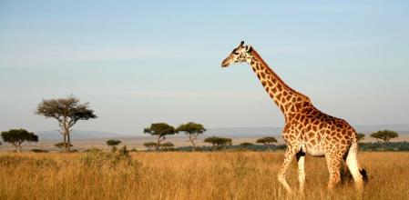

(Giraffa Camelopardais)
La jirafa es un animal mamífero, es originario del África, y se caracteriza por su largo cuello, el nombre de jirafa deriva de la mezcla de tres idiomas, latán, griego y árabe. De los primeros dos se traduciría en (camello leopardo) haciendo referencia a sus colores y del árabe su nombre genérico o más conocido, (Ziraafa y/o Zarapha) que se convirtió en Jirafa. Al nacer pueden medir dos metros de altura y pesar de 50 a 55 kg. Pocas horas después, las crías ya pueden correr, aunque suelen alcanzar la independencia hasta los 18 meses que es cuando dejan la leche materna. Del 25 al 50% llegan a la adultez, por lo que su esperanza de vida oscila entre los 20 y 26 años de edad.
1.La reproducción es vivípara, causada por la unión sexual de los gametos masculino y femenino, esta unión es como sucede con el resto de los mamáferos al fecundar internamente en la hembra el ovulo por el espermatozoide. 2.Este animal es herbívoro, su alimento está compuesto principalmente por hojas ubicadas en las copas delos árboles, y es precisamente su largo cuello el que les permite comer estos alimentos. 3.Sus huesos son firmes, e incluso inicialmente se calculá que su largo cuello tendría más vertebras que el cuello del resto de los animales, pero al estudiar sus esqueletos se han percatado los especialistas que cuentan con el mismo número de vertebras que una persona y muchos otros animales vertebrados. 4.Las jirafas son animales gregarios, esto implica la formación de manadas y la elección natural y generalmente violenta de su líder Alfa. Este guía a la manada hacia los lugares de alimentación, los lugares donde se encuentre el agua. 5.El hábitat natural de la jirafa es la estepa semidesértica como las ubicadas en áfrica y algunos ligares del Asia.